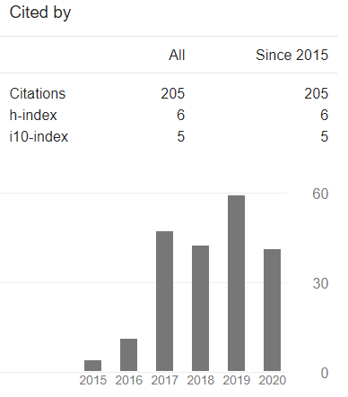

Conferences (8) -------------------------------------
Naveed Anwar Bhatti , Dennis Campagna, Giacomo Caslini, Fabio Massimo Centonze, Koustabh Dolui, Andrea Maioli, Erica Barone, Muhammad Hamad Alizai, Junaid Haroon Siddiqui, Luca Mottola," Battery-less Zero-maintenance Embedded Sensing at the Mithraeum of Circus Maximus ",18th ACM Conference on Embedded Networked Sensor Systems (SenSys) , November 2020.[Teaser] [Video Presentation] Naveed Anwar Bhatti , Luca Mottola, Thiemo Voigt,"On Securing Persistent State in Intermittent Computing ", 8th International Workshop on Energy Harvesting and Energy-Neutral Sensing Systems (ENSsys ’20) , Novemeber 2020. [Video Presentation] Naveed Anwar Bhatti , Muhammad Hamad Alizai, Junaid Haroon Siddiqui and Luca Mottola," Efficient Intermittent Computing with Differential Checkpointing ", 20th ACM SIGPLAN / SIGBED 2019 Conference on Languages, Compilers, and Tools for Embedded Systems (LCTES) , June 2019. Naveed Anwar Bhatti , Muhammad Hamad Alizai, Junaid Haroon Siddiqui and Luca Mottola," The Betrayal of Constant Power × Time: Finding the Missing Joules of Transiently-Powered Computer ", 20th ACM SIGPLAN / SIGBED 2019 Conference on Languages, Compilers, and Tools for Embedded Systems (LCTES) , June 2019. Naveed Anwar Bhatti and Luca Mottola," HarvOS: Efficient Code Instrumentation for Transiently-powered Embedded Devices ,", 16th ACM/IEEE Conference on Information Processing in Sensor Networks (IPSN 2017) , April 2017. [Video Presentation] ," Naveed Anwar Bhatti and Luca Mottola," Efficient State Retention for Transiently-powered Embedded Sensing ,"International Conference on Embedded Wireless Systems and Networks (EWSN 2016) , Feb 2016. Naveed Anwar Bhatti , Zaafar Ahmed and Affan A.Syed," SDN-inspired, Real-time Botnet Detection and Flow-blocking at ISP and Enterprise-level ", IEEE International Conference on Communications (ICC 2015) , June 2015. Naveed Anwar Bhatti , Affan A.Syed and Hamad Alizai, "Sensors with Lasers: Building a WSN Power Grid ," 13th ACM/IEEE Conference on Information Processing in Sensor Networks (IPSN 2014) , April
2014.
Transactions and Journals (7) (Total Impact Factor: 20.59) ------------------------
Naveed Anwar Bhatti , Kapal Dev, B.S Chowdhry"
MUHAFIZ: IoT-based Track Recording Vehicle for the Damage Analysis of the Railway Track ",
IEEE Internet of Things Journal , March 2021. (Impact Factor = 9.936)(HJRS = W) (PDF) Naveed Anwar Bhatti , Martina Brachmann, Muhammad Hamad Alizai"
A Survey on Program-state Retention for Transiently-powered Systems ",
Journal of Systems Architecture, Elsevier , Jan 2021. (Impact Factor = 2.552)(HJRS = W) (PDF) Naveed Anwar Bhatti , Muhammad Hamad Alizai, Junaid Haroon Siddiqui, Luca Mottola "
Demystifying Energy Consumption Dynamics in Transiently-powered Computers ",
ACM Transactions on Embedded Computing Systems (TECS) , November 2020. (Impact Factor = 1.4)(HJRS = W)
(PDF) Naveed Anwar Bhatti , Muhammad Hamad Alizai, Junaid Haroon Siddiqui, Luca Mottola "
Fast and Energy-efficient State Checkpointing for Intermittent Computing ",
ACM Transactions on Embedded Computing Systems (TECS) , November 2020. (Impact Factor = 1.4)(HJRS = W)
(PDF) Naveed Anwar Bhatti "
Comparative Analysis of Bio-Inspired Algorithms for Underwater Wireless Sensor Networks ",
Wireless Personal Communications, Springer , May 2020. (Impact Factor = 1.2)(HJRS = X)
(PDF) Naveed Anwar Bhatti , Hamad Alizai, Affan A.Syed and Luca Mottola,
Energy Harvesting and Wireless Transfer in Sensor Network Applications: Concepts and Experiences ",
ACM Transactions on Sensor Networks (TOSN) , April 2016. (Impact Factor = 2.322) (HJRS = W) Naveed Anwar Bhatti , Affan A.Syed and Hamad Alizai,"
Laser based Energy Distribution Architecture for Decoupling Energy and Sensing Planes in WSN ",
International Journal of Distributed Sensor Networks (IJDSN) , July 2015. (Impact Factor = 1.787)(HJRS = X)
Posters (3) -------------------------------------
Naveed Anwar Bhatti and Luca Mottola"
Towards smaller checkpoints for better intermittent computing ",
IPSN 2018 , April 2018. Naveed Anwar Bhatti and Luca Mottola"
Compiler-assisted Automatic Checkpointing for Transiently-powered Embedded Devices ",
EWSN 2017 , Feb 2017. Naveed Anwar Bhatti ,"
Back To The Future: Sustainable Transiently Powered Embedded Systems ",
IPSN , April 2016. Best PhD Forum Presentation

 https://orcid.org/0000-0003-4115-9889
https://orcid.org/0000-0003-4115-9889